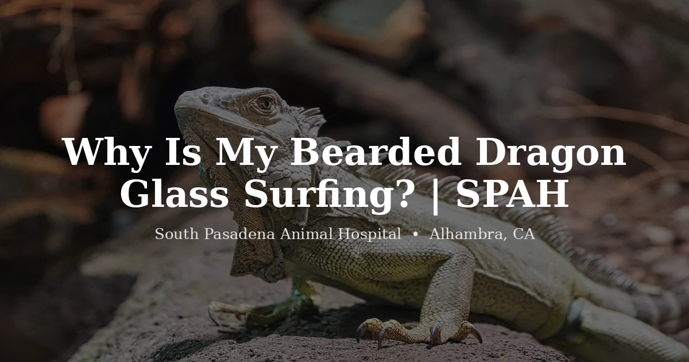

October 14, 2026 · 6 min read
Why Is My Bearded Dragon Glass Surfing?

Once you've seen it, you can't unsee it: your bearded dragon up on its back legs, front claws scrabbling against the glass, running the length of the tank over and over like it's trying to walk through the wall. It's called glass surfing, and the question we get is always the same. Is something wrong? Here's the reassuring headline: glass surfing is a behavior, not a disease. It's your dragon communicating. The work is in figuring out what it's trying to say.
Almost always, it comes down to the environment. Walk through these with us.
The tank is too small
This is the one people underestimate the most. The 20- or 40-gallon setup a baby dragon came home in is nowhere near enough for an adult, and a cramped dragon paces its walls the way a bored dog paces a yard. An adult bearded dragon wants a really large footprint. Think of a 4-foot enclosure as a floor, not a ceiling. If your dragon has outgrown its space, no amount of other tweaking will fully fix the surfing.
It's seeing its own reflection
Glass is a mirror under the right light, and a dragon that spots its own reflection often reads it as a rival dragon that won't leave. So it postures, it surfs, it tries to confront the intruder that's actually itself. This one has a satisfying fix: break up the reflections. Add a background to the back and sides, or cover the lower portion of the side panels. A lot of "mystery" glass surfing quiets right down once the dragon stops seeing a stranger in the glass.
The temperature is off
A dragon that's too cold or too hot gets restless, and restlessness looks like surfing. This is where we remind every reptile owner: measure, don't guess. The basking spot should hit 100–110°F for an adult, with a cooler end in the low 80s. Use an infrared temperature gun, not a stick-on dial thermometer. We've seen far too many "perfect" setups that were quietly running cold once we actually pointed a gun at them.
Boredom and wanting out
Bearded dragons are more curious than people give them credit for. A barren tank with nothing to climb, explore, or investigate gets old, and a dragon that's used to supervised time out of the enclosure may surf simply because it wants that time. Enrichment helps, branches, basking ledges, things to climb over and hide under, as does a predictable routine of safe, supervised exploration outside the tank.
Season and hormones
During breeding season, which tends to pick up in late winter and spring here in Southern California, dragons (especially males) can get generally more restless and territorial. A bump in surfing during those months, in a dragon that's otherwise eating and healthy, often just rides along with the hormones and settles as the season passes.
When glass surfing might be more than behavior
Here's the line we want you to hold onto. On its own, in a bright, hungry, healthy dragon, glass surfing is a husbandry puzzle, not a medical one. But when the surfing comes packaged with other changes, not eating, staying dark, hiding, looking generally flat and lethargic, the restlessness may be discomfort rather than boredom. That combination earns a look from a vet. We cover the broader warning signs in our guide to the signs a bearded dragon needs a vet, and a persistently dark dragon in our piece on why bearded dragons turn black.
When it's more than husbandry
Reach out to a reptile vet if your bearded dragon:
- Keeps glass surfing even after you've corrected tank size, reflections, and temperatures
- Is surfing and not eating, staying dark, or hiding
- Seems lethargic or weak rather than restless and energetic
- Is losing weight, straining, or showing any other sign that it feels unwell
We see bearded dragons routinely at our reptile vet in Alhambra, and a husbandry-and-health check is a good way to separate "unhappy with the setup" from "not feeling well." Take a look at our exotic vet services or pricing page for what to expect.
Frequently Asked Questions
What is glass surfing in bearded dragons?
It's when a dragon repeatedly scratches, paws, or runs along the clear walls of its enclosure, often up on its hind legs as if trying to climb out. It's a behavior, not a disease, usually a sign the dragon is stressed or unhappy with something in its environment.
Is glass surfing bad for my bearded dragon?
Occasional surfing isn't harmful on its own, but persistent surfing is your dragon telling you something's off, often a tank that's too small, a reflection, wrong temperatures, or boredom. Chronic stress isn't good for any animal, so it's worth tracking down the cause.
How do I stop my bearded dragon from glass surfing?
Work the triggers: make sure the enclosure is big enough (adults need far more room than people expect), cut reflections with a background or covered sides, confirm temperatures with a temperature gun, and add enrichment and hides. If it continues after the setup is dialed in, or comes with appetite loss or lethargy, have a reptile vet take a look.
Can glass surfing mean my bearded dragon is sick?
Usually it's behavioral. But if it shows up alongside not eating, staying dark, hiding, or lethargy, the restlessness may be discomfort rather than boredom, and that combination is worth a vet exam.